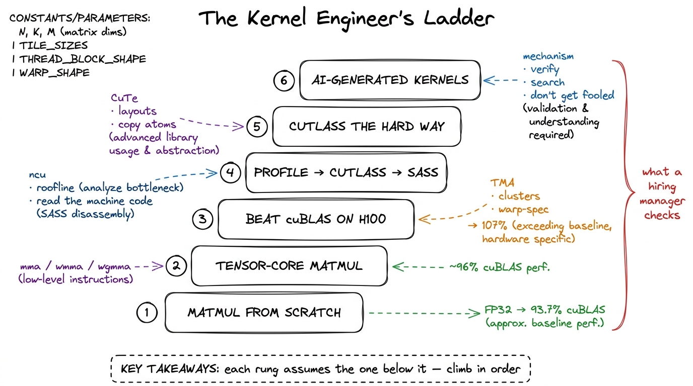
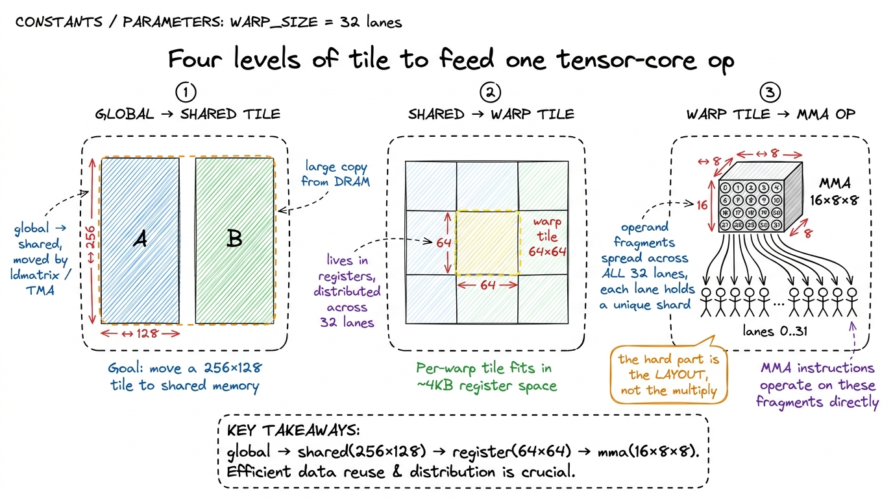
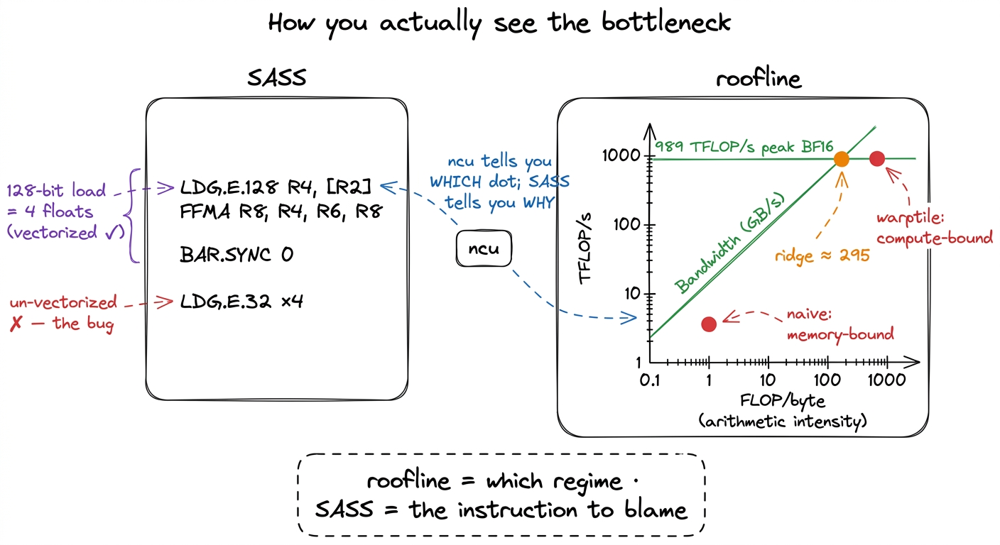

The kernel engineer's skill map CAREER
A kernel engineer is not someone who has memorized the CUDA C++ Programming Guide. It is someone who can be handed a GPU and a slow piece of math and, within an afternoon, tell you why it is slow, which of the three resources it is starved for, and what the next kernel should do differently — and then write that kernel and prove the speedup with a profiler. That is a small, concrete, checkable set of abilities. This article is the map of exactly those abilities, and it points at the spot on this site where each one is taught.
I wrote it because the most common question I get from people starting out is the wrong shape. They ask "what should I read?" The hiring managers I have talked to — the ones staffing GPU teams at inference startups and the big labs — never ask what you have read. They ask what you have built and whether you can read a profile. So this is a checklist of things you should be able to do, phrased the way an interviewer would probe them, with a pointer to where each skill lives here.
The six things they actually check
Strip away the résumé noise and the interview loop for a kernel role reduces to six competencies. They form a ladder — each one assumes the one below it — and they map almost one-to-one onto the sections of this course.
- Matrix multiply from scratch. Can you take
C = A · Bfrom a naive one-thread-per-output kernel to something within shouting distance ofcuBLAS, in plain FP32 CUDA, and explain every step with a measurement? - Tensor-core matmul. Can you feed the actual matrix-multiply hardware —
mma,wmma,wgmma— instead of the general-purpose FP32 ALUs, and handle the fussy register layouts that requires? - Beating cuBLAS on H100. Can you use the Hopper-specific machinery — Tensor Memory Accelerator (TMA), thread-block clusters, warp specialization — to reach or exceed the vendor library?
- Profiling → CUTLASS → SASS. Can you drive Nsight Compute, read a roofline, drop into a production template library, and when it lies to you, read the machine code?
- CUTLASS the hard way. Do you understand the abstractions —
CuTe, layouts, tiled MMA, copy atoms — well enough to build with them rather than copy-paste from them? - AI-generated kernels. Can you supervise a model that writes kernels — verify correctness, run test-time search, and not get fooled by a "10× speedup" that is actually a broken benchmark?

figure rendering · The six competencies a GPU-kernel interview actually probes, as a laddLet me walk each rung, and each time point at where it lives.
Rung 1 — Matrix multiply from scratch
This is the foundation and the filter. If you cannot climb the GEMM ladder, nothing above it will hold. The task: start from the dumbest correct kernel — one thread per output element, reading a full row of A and a full column of B from global memory — and improve it, one measured optimization at a time, until you are near the vendor library.
This single exercise carries so much weight because it forces you to derive every core GPU idea from a measurement rather than memorize it. Coalescing, shared-memory tiling, register blocking, vectorized float4 loads, occupancy, autotuning — none of it is introduced as a fact; each shows up because the profiler pointed at it. The canonical version is Simon Boehm's, and the numbers are strikingly reproducible: naive lands at 1.3% of cuBLAS, a one-line coalescing fix roughly quadruples it to 8.5%, shared-memory tiling reaches 12.8%, 1D register tiling 36.5%, 2D tiling 68.7%, vectorized loads 78.4%, autotuning 84.8%, and warp-tiling 93.7%.1 Those percentages are FP32, square matrices, one specific GPU. The absolute numbers wobble across cards; the ratios and the ordering of the wins are remarkably stable, which is exactly why this is a good teaching ladder — the lessons transfer even when the silicon changes. Ninety-four percent of a library NVIDIA has tuned for fifteen years, from nothing but profiles.
On this site this is the entire GEMM Ladder section. It opens with kernel 1, the naive baseline, and every rung follows the same worklog loop — hypothesis, then code, then a profile, then a bold number, then the bridge to the next kernel. If you internalize only one section here, make it this one; it is the vocabulary everything else is spoken in.
The prerequisite mental model — knowing which resource you are fighting before you write a line — is the three regimes: compute, memory bandwidth, and overhead. The naive matmul is a textbook memory-bound kernel at roughly one FLOP per byte loaded, hundreds of times below the H100's ridge point of about 989e12 / 3.35e12 ≈ 295 FLOPs per byte. Every win below the tensor-core rung is a memory win, and the regime model is why.
Rung 2 — Tensor-core matmul
The 93.7% ceiling on rung 1 is a lie of omission: it is 93.7% of FP32 cuBLAS, and FP32 cuBLAS does not touch the tensor cores. The real throughput on an H100 lives in the tensor-core units — roughly 989 TFLOP/s of dense BF16, well over an order of magnitude past what the general-purpose FP32 ALUs (a few dozen TFLOP/s) can do. Rung 2 is learning to feed that hardware.
The catch is that tensor cores are not "faster ALUs." They are a separate machine with a rigid appetite. You issue a matrix-multiply-accumulate instruction — mma.sync.aligned.m16n8k8... at the PTX level, the higher-level wmma API, or on Hopper the warp-group wgmma — and each consumes a small fixed-size tile (16×8×8, say) with the operand fragments laid across the registers of an entire warp in a specific, non-obvious pattern. Most of the work is not the multiply; it is getting the bytes into the right registers. That is what ldmatrix exists for, and why the tiling deepens to four levels: global tile → a 256×128 shared-memory tile → a 64×64 per-warp register tile → the hardware's 16×8×8 op.2 wmma is the portable, forgiving API and a fine place to start; raw mma/wgmma PTX is less portable and more work but is where the last chunk of performance hides. Alex Armbruster's tensor-core worklog reaches 96% of cuBLAS at 8192×8192 using the PTX path, from ~8% up through swizzling, async prefetch, and double buffering.

figure rendering · Rung 2. A single tensor-core instruction eats a 16×8×8 tile whose operOn this site this is the Tensor Cores section: what a tensor core is physically, the fragment-layout problem, ldmatrix, and the wmma-then-mma progression. The bank-conflict story it depends on — why a swizzle is a bit-permutation of the shared-memory index, and why the 32 banks punish the naive layout — is developed in the shared memory article. Swizzling alone is worth going from ~24% to ~50% of cuBLAS here, so it is not a footnote.
Rung 3 — Beating cuBLAS on H100
This is where "competent" becomes "hired." Matching FP32 cuBLAS is an exercise; beating BF16 cuBLAS on an H100 means using the parts of Hopper (sm_90a) that did not exist before it. There are three, and they are the entire game.
TMA, the Tensor Memory Accelerator, is a hardware DMA engine that copies whole tiles between HBM and shared memory asynchronously with the swizzle applied for free, freeing the threads to compute instead of computing addresses. Thread-block clusters with distributed shared memory (DSMEM) let a group of SMs read each other's shared memory, so a TMA load can be multicast to several SMs at once instead of each re-reading HBM. And warp specialization splits a block's warps into producers running TMA loads and consumers running wgmma, wired together through a circular shared-memory buffer and mbarriers — a genuine on-chip producer–consumer pipeline.
Stack those and you get past the vendor. The public worklog that does this reaches 107% of cuBLAS — 764 versus 716 TFLOP/s at one size — with the margin coming from an 83% L2 hit rate (versus cuBLAS's ~70%) won by scheduling tiles along a Hilbert curve so that consecutive thread blocks touch nearby data.3 This exploits the H100's ~50 MiB L2 (two partitions joined by a crossbar, 128-byte lines split into four 32-byte sectors). "Beating cuBLAS" is real but narrow — it holds for specific shapes and precisions; cuBLAS is a generalist covering thousands of shapes, and that generality is exactly the seam a specialist kernel exploits.
On this site this is the Hopper Programming Model section — TMA, clusters/DSMEM, wgmma, and warp-specialized pipelines — culminating in a capstone worklog that reproduces the >100%-of-cuBLAS result end to end. The pipeline-overlap intuition (why double buffering hides latency, why the producer must run ahead of the consumer) is the same idea you met as async prefetch on rung 2, now promoted to a first-class hardware feature.
// The shape of a warp-specialized Hopper mainloop (schematic, not compilable).
if (warpgroup_is_producer()) {
for (int k = 0; k < K_TILES; ++k) {
wait_for_empty(buf[k % STAGES]); // consumer freed this slot
tma_load(buf[k % STAGES], A_tile, B_tile); // async HBM -> SMEM, swizzled
arrive_full(buf[k % STAGES]); // signal the consumers
}
} else { // consumer warpgroups
for (int k = 0; k < K_TILES; ++k) {
wait_for_full(buf[k % STAGES]);
wgmma(acc, buf[k % STAGES]); // tensor-core MMA on the tile
arrive_empty(buf[k % STAGES]); // release the slot to producer
}
}Rung 4 — Profiling → CUTLASS → SASS
Everything above is impossible without the ability to see, and that ability is itself a graded skill. Rung 4 is the diagnostic toolchain, and the standard curriculum for it is the GPU MODE lecture series (formerly CUDA MODE), which walks from Nsight Compute fundamentals through CUTLASS internals and down into reading SASS.
The skill has three depths. First, Nsight Compute: launch a kernel, read the memory-workload and compute-throughput sections, place it on a roofline, and state its regime in one sentence — "72% of peak DRAM throughput, 4% of peak FP32, so it is memory-bound, so fusion is the move." Second, CUTLASS as a tool: reach for NVIDIA's production template library when hand-rolling stops paying, and understand its knobs (tile shapes, stages, schedules) well enough to pick them. Third — the depth that separates senior from mid — reading SASS, the actual machine ISA the driver runs, not the PTX virtual assembly. When ncu says you are register-bound or a loop is not unrolling, the SASS confirms it.4 PTX is a portable virtual ISA that ptxas compiles further into SASS; the two do not correspond line-for-line, and the interesting optimizations (register allocation, instruction scheduling, dual-issue) happen in that second step. If you only ever read PTX you are reading the compiler's input, not its output.

figure rendering · Rung 4. The roofline names your regime; the SASS names the instructionLDG.E.128 versus four LDG.E.32 is a vectorized load versus a wasted one, and only the disassembly shows it.On this site this is the Profiling & Tooling section: an ncu-driven walkthrough, the roofline article, a CUTLASS orientation, and a SASS-reading primer that annotates a real disassembly the way the GEMM-ladder articles annotate their profiles. Every worklog on the site already leans on this section implicitly — this is where it is made explicit.
Rung 5 — CUTLASS the hard way
Using CUTLASS by copying an example is rung 4. Understanding it is rung 5, and the two are far apart. CUTLASS's modern core is CuTe, an algebra of layouts — a layout is a shape paired with strides that maps logical coordinates to memory offsets, and once you can compose, tile, and partition layouts by hand, the whole library stops being magic. On top of layouts sit tiled MMA (how a tensor-core op is replicated across a warp) and copy atoms (how ldmatrix, TMA, and vector loads become composable data-movement primitives).
This rung exists as its own skill because the abstractions are only legible after you have suffered the manual versions. The best treatment — "learn CUTLASS the hard way" — makes you write the naive, coalesced, shared-memory, tiled, and raw-WMMA kernels first, reaching a 70× speedup by hand, and only then introduces CuTe as the thing that would have written all of that for you. That is the whole pedagogy of this site, so the fit is exact: you climb rungs 1 through 3 by hand before you see them re-expressed as layouts and atoms.
On this site this is the CUTLASS Internals section, sequenced after the by-hand ladder: the layout algebra, tiled MMA, copy atoms, and one worked example rebuilding a ladder kernel in CuTe so you can see both versions side by side.
Rung 6 — AI-generated kernels
The newest rung, and the one every interviewer in 2025 is suddenly curious about: can a model write these kernels, and can you supervise it? The honest state of the art is that frontier models, left alone, produce a correct-and-faster-than-PyTorch kernel less than 20% of the time — and they are worst at exactly the hard parts, tensor-core intrinsics and the Hopper machinery from rung 3.
But the workflow around the model changes the picture sharply, and that workflow is the skill. The harness is KernelBench, scored by fast_p (fraction of problems solved correctly and at least p× faster than PyTorch eager). The techniques are what you would expect once you think of it as search over a verified space: test-time search — sampling a hundred candidates and keeping the ones that pass — pushed one model from 4% to 37% on the fusion tier; iterative refinement feeds profiler output back across turns; and multi-turn RL (the Kevin work) lifted correctness from 56% to 82%. The through-line is that verification is the load-bearing skill: the model proposes, but you build the correctness check and the honest benchmark, because the most common failure mode is a "10× speedup" that is a kernel computing the wrong thing fast, or a benchmark that forgot to synchronize.5 The Stanford CRFM "fast kernels" work is the cleanest demonstration that a disciplined search-plus-verify loop can match or beat PyTorch's own optimized ops on several kernels (their FP32 Conv2D, LayerNorm, Softmax and matmul all land at or above torch on an L40S) — while being candid that the same loop still struggles on the hard cases like FP16 matmul and Flash Attention. Treat any suspiciously good AI-generated number as broken until the correctness check and a warmed, synchronized benchmark say otherwise.
On this site this is the AI Kernels section: KernelBench and fast_p, a build-your-own verify-and-search loop, and a worklog where a model and a profiler iterate on a real kernel — with a blunt catalogue of the ways these pipelines lie to you. It sits last on purpose: you can only supervise a kernel-writing model if you can yourself read the profile it reacts to and the SASS it generates.
What a graduate can honestly say
Put the six rungs together and there is one sentence a person who has finished this site can say without exaggerating, and that a hiring manager will recognize as true:
"I can take a matrix multiply from a naive kernel at 1.3% of cuBLAS to a warp-specialized Hopper kernel that matches or beats it, feed the tensor cores with wgmma and TMA, prove every step with Nsight Compute and SASS, rebuild it in CUTLASS with CuTe, and supervise a model that writes kernels well enough to catch it when it lies."
That is the whole map. Start at kernel 1, keep the three regimes on the wall beside you, and climb.